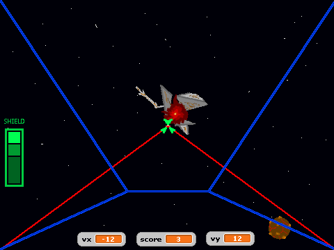
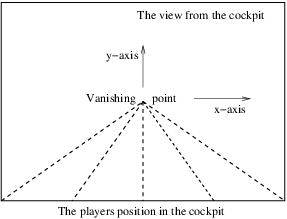
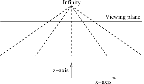
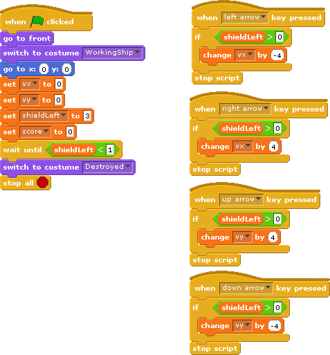
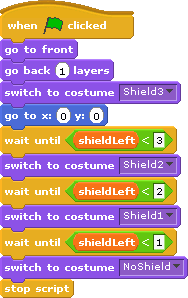
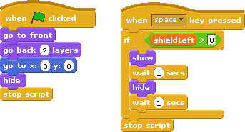
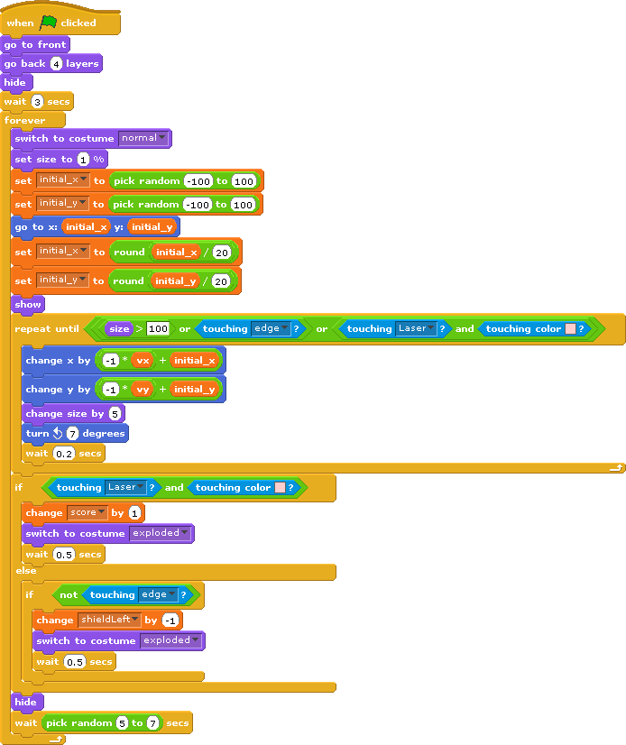

W. H. Bell
Scratch is a great programming language for testing out a range of concepts. Scratch programs typically involve controlling one or more sprites on the screen. Computer games where the characters are controlled from a distant view are third-person games. Games can be more exciting when the human player looks through the eyes of the central character in the game. This is normally referred to as a first-person game.
In this article, some of the principles of constructing a first-person game are introduced. The player is the pilot of a spaceship that is drifting through a debris field. The main engine has gone offline, causing the spaceship to drift through the debris at a constant speed. However, the spaceship still has working thrusters on the top, bottom, left and right of the craft. The main laser system is also operational. The heroic pilot has to shoot through or dodge the debris. A point is awarded each time a piece of debris is destroyed with the ships lasers. If the debris crashes into the spacecraft, then the shield of the spacecraft will be damaged. After the shield has been completely broken, the spacecraft will explode.

Objects that are far away appear to be smaller. One example of this is a set of railway tracks. Looking down railway tracks and into the distance, the tracks appear to become closer together. This can be applied to a computer game, where objects need to be shown as being in the distance. When an object becomes closer to a player, the object should become larger on the screen.
In this game, a one-point perspective is used. This means that distant objects appear to come from the centre of the screen. Rather than draw a lot of very small images at the vanishing point, it is more sensible to assume a viewing plane. The viewing plane corresponds to the distance at which objects become visible. The two Figures below show the vanishing point as it appears on the screen and the position of the viewing plane. In the illustration of the viewing plane, the z-axis points from the centre of the screen straight towards the player and is perpendicular to the x-y plane.


If the spacecraft has no velocity along the x-y plane and an object appears at the viewing plane with a position that is not in the centre of the screen, then the object appears to have a velocity that is proportional to distance from the center of the screen. This is not a real velocity, but is the effect of the perspective used to display the z-axis. This effect can be observed when driving along a straight road. An vehicle that is on the other side of the road, but far in the distance appears to move to the other side of the road as it approaches.
In the game, the spacecraft is not able to turn. Since the stars in the distance are very far away, they would not appear to move relative to the spacecraft. Therefore, a static star field was drawn on the stage background.
The spaceship cockpit and heads up display should stay in the foreground. This was achieved by creating a sprite that is as big as the screen. When the game starts, the SpaceShip sprite is set to be above other sprites. Therefore, the cockpit edges are displayed as being in the foreground.

The horizontal and vertical velocity components of the spacecraft are stored in the vx and vy variables. These variables were created as global variables, since the velocity components affect the motion of other sprites on the screen. The shieldLeft variable contains the number of shield points left and the score contains the player's score. This variable was created as a global variable, since the other sprites that may hit the cockpit need to be able to change its value. The score variable was created as a global variable, since other sprites need to be able to increment it. The game continues until there are no shield points left. When the game starts all four global variables are reset to zero and the spaceship is shown to be working as normal. If there are no shield points left, then the ship is shown to be destroyed by changing the costume of the SpaceShip sprite. The trusters on the right, left, bottom and top of the spacecraft are controlled by the cursor keys. Since the spacecraft is in space, there is no friction to slow down the spacecraft. Therefore, firing the trusters in one direction will build up the velocity in that direction. To make it easier for the player to see the current status of the game, the values of the vx, vy and score variables were selected to be displayed at the bottom of the screen.
The amount of shield points left is shown on the left-hand side of the screen. This image is a sprite called Shield, which has several costumes that correspond to the different shield states. The different costumes were a copy of the first costume, where one more green box was removed.
When the green flag is pressed, the Shield sprite is set to be just below the main cockpit but above the other sprites. This means that the shield display stays in the foreground. The script for the Shield sprite waits until the number of shield points decreases and then switches to the appropriate costume.

The lasers were drawn as another sprite. The size of the Laser sprite was carefully matched to the SpaceShip sprite by copying the SpaceShip costume to check where the lasers would appear on the screen.

When the green flag is pressed, the Laser sprite is set to be just below the SpaceShip sprite. Therefore, it is in the foreground but not as close as the cockpit. The lasers are fired by pressing the space bar. To make the game a little bit harder, the lasers fire for a second and then recharge for a second. This means that the player should not hold down the space bar, but only fire the lasers when needed. Similar to the SpaceShip sprite script, the Laser sprite only recognises the space bar when the number of shield points is greater than zero.
Two types of space debris were created, referred to as LavaBall and Scrap. The script for the LavaBall sprite was copied and modified slightly for the Scrap sprite to prevent both sprites appearing at exactly the same time. The two sprites were also given two costumes, to show them as being normal or exploded.

When the green flag is pressed, the LavaBall is as being below the cockpit, shield display and lasers. Then it is hidden from view. The main loop continues while the game is being played. When the SpaceShip sprite switches to the destroyed costume, it finishes the game by stopping all scripts. This includes the main loops of the space debris sprites.To show that it is in the distance, the LavaBall appears at the viewing plane at 1% of its normal size. To make the game more interesting, its starting position is chosen at random in the x-y plane. Due to the one-point perspective used, objects that are closer to the edge of the screen will quickly disappear from the edge of the screen. Therefore, objects were chosen to appear within a 100 by 100 box around the centre of the screen. The initial position of the sprite along the x and y-axes is stored in the initial_x and initial_y variables. Since these variables are only needed for this sprite, they were created as local variables for this sprite only. The initial position components are rescaled to produce an apparent velocity offset associated with the perspective. They are rounded to integers, since the sprite moves in numbers of pixels. The sprite is then shown on the screen. The script then enters another loop that continues until the sprite is either full size, has touched the edge of the screen or has been hit by the laser beams. The point where the two laser beams meet was given a pink colour, such that this colour could be used to test if the laser beams had hit the LavaBall. The relative velocity of the debris along the z-axis can be increased by increasing the 5% resize command or by reducing the size of the wait within the motion loop.
In this game, the space debris is spinning but is otherwise stationary with respect to the rest of the Universe. The spacecraft is drifting through the debris field at a constant speed and starts the game at rest in the x-y plane. When the spacecraft trusters are fired, the spacecraft moves along the x-y plane with respect to the Universe. However, the game is played from the pilots point of view, rather than from the point of view of the Universe or the space debris. Therefore, when the player's spacecraft is moving to the left, the LavaBall is shown as moving to the right. If the spacecraft moves downwards, then the LavaBall moves upwards. This can be demonstrated by looking at a cup on a desk. If the person looking at the cup moves to the left then the cup moves to the right with respect to the persons line of sight. The motion of the Sprite is therefore the sum of the relative velocity and the apparent velocity due to the object being created a point on the viewing plane that is not in the centre of the screen.
If the LavaBall has been hit by the laser beams, then the score is incremented and the costume is switched to the exploded version. The program waits for half a second for the player to view the exploded sprite. If the LavaBall has not been hit by the lasers and it has not touched the edge of the screen then it has hit the spacecraft. If the LavaBall has hit the spacecraft, then the number of shield points is reduced by one and the LavaBall costume is switched to the exploded version. If the LavaBall has missed the spacecraft, then it disappears behind the spacecraft harmlessly. After these logic conditions, the LavaBall sprite is hidden and reappears somewhere else on the screen.
Other features could be added to the game. The spacecraft could collect shield tokens or be able to use a wider laser beam to destroy more than one object at once. Alternatively, the principles demonstrated within this program could be used to create a first-person car racing game.